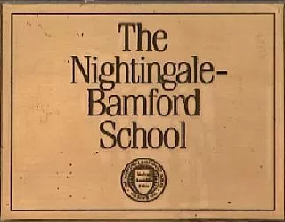
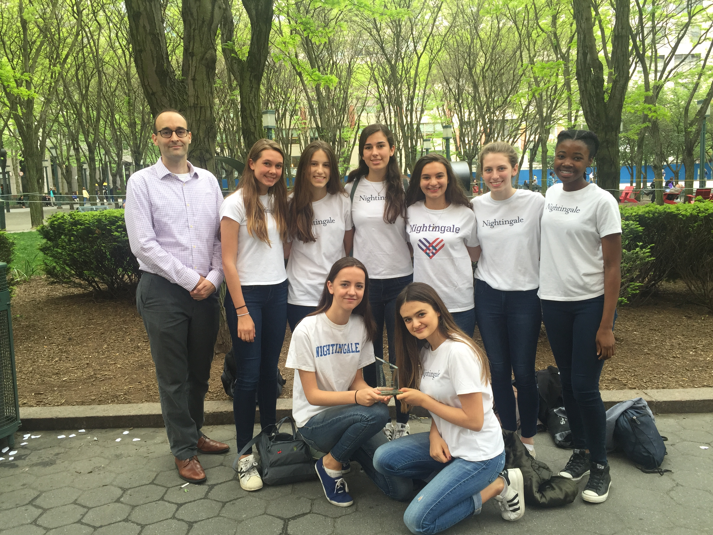
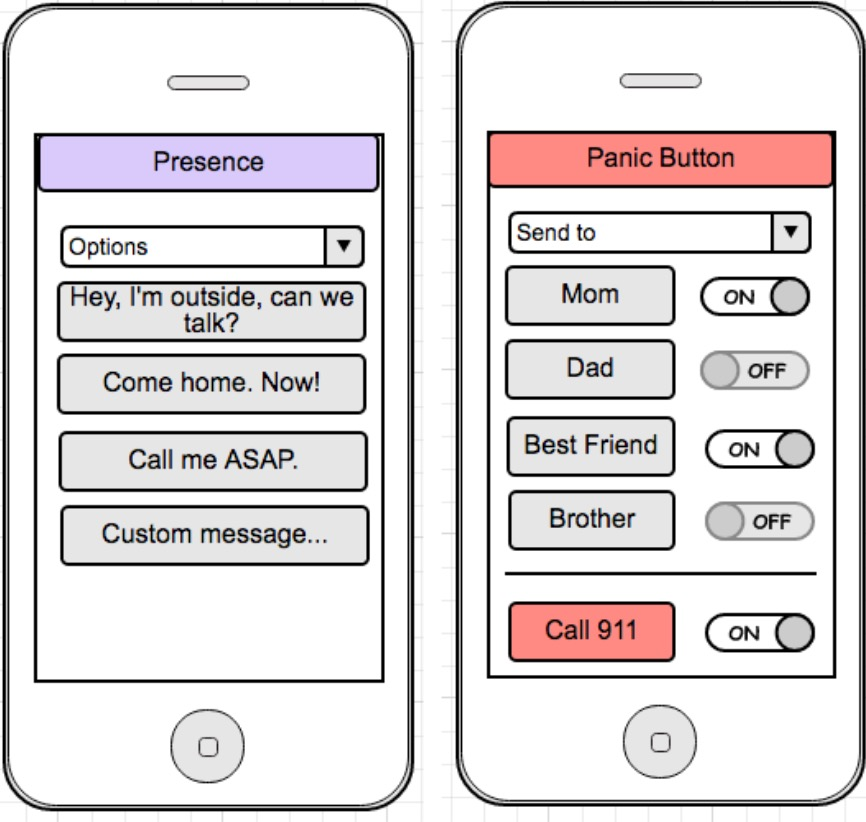
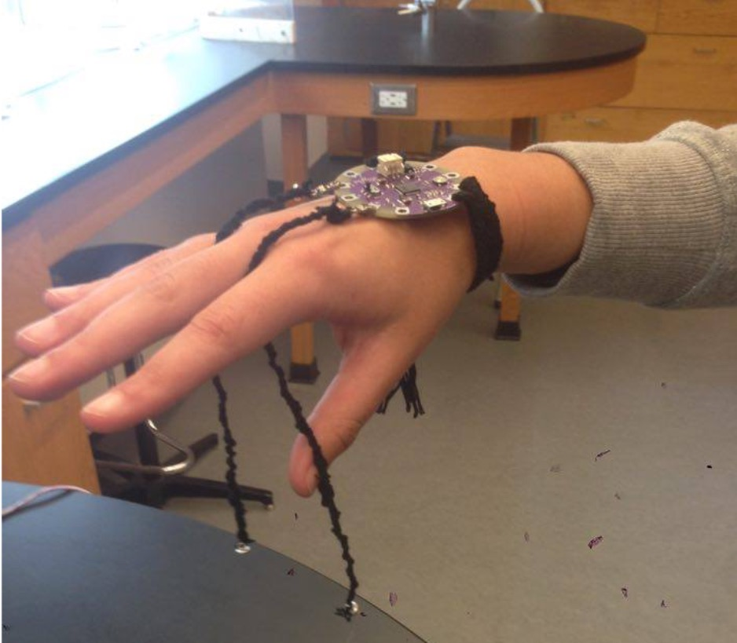
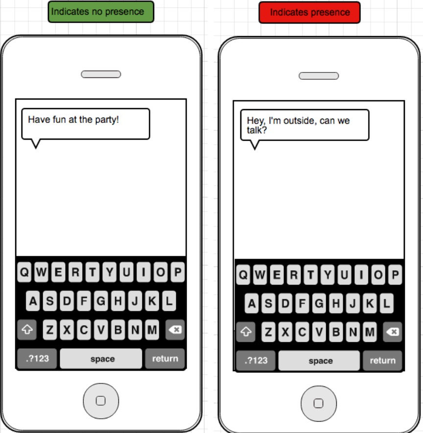

Soteria
About
Inception
Soteria was thought of by 8 high school students from the Nightingale-Bamford School in New York. As members of the Innovention team, Annabelle King, Ayla DeConti, Brittany Rollins, Cristina Sola, Isabel Geddes, Jamie Spanfeller, Katherine Graham, and Zoe Rose were tasked with coming up with a new product that would have a wide market in order to compete in the Innovention competition against other schools. Due to going to an all-girls school and constantly hearing about rape cases on college campuses, at parties, etc., we thought about how we could help solve the issue in a conceivable way. Our solution was a bracelet that could detect roofies and contained a panic button in case a roofie is detected. We were inspired by the roofie detecting nail polish, which seemed useful, but slightly impracticle due to actually having to stir one's finger in your drink and having to reapply the nail polish any time one goes out.
Prototype
Since we only needed a prototype for the competition, and we only had a few weeks to make it, we couldn't really focus on the aesthetics of the bracelet. After msuh deliberation and many different designs, we decided to make the prototype out of a lilypad arduino and thread. A few of us worked on the prototype, and the rest of us worked on the business plan, the logo, the catch phrase and the presentation. The prototype was quite bulky, and the band that contained the arduino was made out of black thread weaved into a "v" pattern. We made it so that along with the band around the wrist, there was also some conductive string attached to the arduino, which had an led light near the base. The conductive string would go around the wearers middle finger, and was partially covered by black thread. Our prototype detected ions in place of roofies, and remained lit up until the conductive string was dropped into an ionic solution.
We initially wanted to name our product after the greek goddess Artemis, who is said to protect maidens young women and traveled with a band of young huntresses. But we wanted to be different, so we looked for a lesser known goddess, and we stumbled upon "Soteria": the greek goddess of safety and deliverance from harm. We chose her because she represents everything our product is about, and her name also sounds interesting and different. It's memorable.
Competition
At the competition, there were many great groups who had interesting ideas. The judges told us after our presentation that they would have like for us to have a more lively pitch without notes, but that was the only fault they had. We ended up placing third overall. The ideas that placed above ours were a bag that was inflatable and good for travel (judges liked their presentation) and a one-handed soldering tool (the product actually worked).
How our actual product would work:
- link up bracelet to app
- in app cutomize the messages that you want to be sent to your phone to indicate the presence (or lack thereof) of a roofie
- also customize which of your contacts will be alerted once you press the panic button (911 is also an option) 
- unloop string from around middle finger 
- lower it into drink (hold cup from above if you wish to be discreet)
- on of your cutomized messages will be sent to your phone, indicating whether or not a roofie was detected
- If you feel really unsafe, you can press the panic button and whomever you chose to be your emergency contact will be alerted that you are in danger and given your exact location
- If nothing was dectected, have fun! 
Demo:
Future Plans

Hopefully, in the future, our product will become so popular that when predators see someone wearing it, they will be deterred from attacking them. We also plan on making earrings and necklaces that have panic buttons in/on them, so that there can be smaller bracelet options. We would also wish to partner up with big music festivals, like Coachella and Gov Ball. We would implement our technology into there already existing wristbands. These bracelets would be less complex, meaning that they would only light up without the panic button and messaging option.
I hope you enjoyed learning more about Soteria and its creators. We truly think that this product could save many people as we work towards stopping sexual assualt. Tell friends about our product if you find it useful. You can see what our final products would look like on our Buy page.